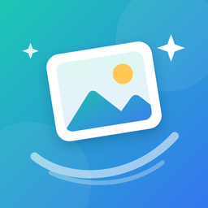

Privacy Policy
Airy · Photo & Storage Cleaner개인정보처리방침
시행일: 2026-10-09
Airy(이하 "앱")는 사용자의 개인정보를 수집하지 않습니다.
1. 사진 및 동영상
앱은 중복·유사 사진 등을 찾기 위해 사진 보관함에 접근합니다. 모든 분석은 사용자의 기기 안에서만 이루어지며, 사진·동영상·분석 결과는 어떤 서버로도 전송되지 않습니다. 분석 결과(캐시)는 기기에만 저장되며 설정에서 언제든 삭제할 수 있습니다.
2. 최근 정리한 항목
삭제한 항목을 나중에 확인할 수 있도록, 앱은 삭제 직전에 각 항목의 작은 미리보기(최대 300픽셀)와 삭제 날짜·항목 종류를 기기 안에만 저장합니다. 이 기록은 어디에도 전송되지 않고 iCloud 백업에서 제외되며, 30일이 지나면 자동으로 삭제됩니다. 앱은 사진을 직접 복구할 수 없으며, 복구는 사진 앱 > 앨범 > '최근 삭제된 항목'에서 할 수 있습니다.
3. 알림
무료 체험을 시작할 때 원하는 경우에만 체험 종료 2일 전 알림을 받을 수 있습니다. 이 알림은 기기에서 예약되는 로컬 알림이며 어떤 정보도 전송하지 않습니다. 알림 권한은 사용자가 원한다고 선택했을 때만 요청합니다. 주간 정리 알림을 켜면 앱이 기기 안에서 백그라운드로 새로 쌓인 정리 대상을 확인하고, 일주일에 최대 한 번 로컬 알림을 보냅니다. "새 중복 사진 자동 수집" 설정(기본값 켬, 설정에서 끌 수 있음)도 기기 안에서 백그라운드로 실행되며, 새 사진 중 똑같은 사진을 찾아 확인할 수 있도록 모아 둡니다. 사용자가 확인하기 전에는 아무것도 삭제하지 않으며, 어떤 정보도 전송하지 않습니다.
4. 수집하는 정보
앱은 이름, 이메일, 위치, 광고 식별자 등 개인을 식별할 수 있는 정보를 수집하지 않으며, 계정 가입도 필요하지 않습니다. 광고나 제3자 추적 도구를 사용하지 않으며, 사용 통계(분석)나 광고 성과 측정 정보도 수집하거나 전송하지 않습니다.
5. 결제
구독 및 구매는 Apple의 App Store를 통해 처리됩니다. 결제 정보는 Apple이 관리하며 앱 개발자는 이를 받지 않습니다.
6. 사진 삭제
앱은 사용자가 확인한 항목만 iOS 시스템 기능으로 삭제합니다. 삭제된 항목은 '최근 삭제된 항목'에 30일간 보관됩니다.
7. 아동
앱은 아동의 개인정보를 수집하지 않습니다.
8. 변경
본 방침이 변경되면 이 페이지에 게시하고 시행일을 갱신합니다.
9. 문의
プライバシーポリシー
施行日：2026-10-09
Airy（以下「本アプリ」）は、ユーザーの個人情報を収集しません。
1. 写真と動画
本アプリは重複・類似写真などを見つけるために写真ライブラリにアクセスします。分析はすべて端末内で行われ、写真・動画・分析結果がサーバーに送信されることはありません。分析結果（キャッシュ）は端末内にのみ保存され、設定からいつでも削除できます。
2. 最近整理した項目
削除した項目をあとで確認できるよう、本アプリは削除の直前に各項目の小さなプレビュー（最大300ピクセル）と削除日・項目の種類を端末内にのみ保存します。この記録はどこにも送信されず、iCloudバックアップの対象外で、30日後に自動で削除されます。本アプリが写真を直接復元することはできません。復元は写真アプリ >アルバム >「最近削除した項目」から行えます。
3. 通知
無料トライアルの開始時に希望した場合のみ、トライアル終了の2日前にお知らせを受け取れます。この通知は端末内で予約されるローカル通知で、情報を送信することはありません。通知の許可は、ユーザーが希望したときにのみ求めます。週1回の整理リマインダーをオンにすると、アプリは端末内でバックグラウンドで新たにたまった整理対象をチェックし、週1回までローカル通知を送ります。「新しい重複写真を自動で集める」設定（初期設定はオン、設定でオフにできます）も端末内でバックグラウンドで動作し、新しい写真の中から同一の写真を見つけて確認できるように集めておきます。ユーザーが確認するまで何も削除せず、情報を送信することもありません。
4. 収集する情報
氏名、メールアドレス、位置情報、広告識別子など個人を特定できる情報は収集せず、アカウント登録も不要です。広告や第三者のトラッキングツールは使用せず、利用統計（分析）や広告効果測定の情報も収集・送信しません。
5. お支払い
サブスクリプションと購入はAppleのApp Storeを通じて処理されます。決済情報はAppleが管理し、開発者が受け取ることはありません。
6. 写真の削除
本アプリはユーザーが確認した項目のみをiOSのシステム機能で削除します。削除した項目は「最近削除した項目」に30日間残ります。
7. 子ども
本アプリは子どもの個人情報を収集しません。
8. 変更
本ポリシーを変更する場合は、このページに掲載し施行日を更新します。
9. お問い合わせ
Privacy Policy
Effective: 2026-10-09
Airy ("the app") does not collect your personal data.
1. Photos and videos
The app accesses your photo library to find duplicates, similar shots and other items you may want to delete. All analysis happens on your device. Your photos, videos and analysis results are never sent to any server. Analysis results (a cache) are stored only on your device and can be deleted at any time in Settings.
2. Recently cleaned
So you can see what was deleted, the app saves a small preview (at most 300 pixels) of each item, the date and the cleanup category, on your device only, just before deleting it. This record is never sent anywhere, is excluded from iCloud backups and is removed automatically after 30 days. The app cannot restore photos itself; you can restore them in Photos > Albums > Recently Deleted.
3. Notifications
When you start a free trial, you can choose to get one reminder 2 days before the trial ends. It is a local notification scheduled on your device; nothing is sent anywhere. The app asks for notification permission only if you choose the reminder or the weekly tidy-up reminder. If you turn on the weekly tidy-up reminder, the app checks for new clutter in the background on your device and sends at most one local notification a week. The optional "Auto-collect new duplicates" setting (on by default, can be turned off in Settings) also runs on your device in the background, finds exact copies among new photos and gathers them for you to review; nothing is deleted without your confirmation. None of this is sent anywhere.
4. Information we collect
We do not collect names, email addresses, location, advertising identifiers or any other information that identifies you, and no account is required. The app contains no ads and no third-party tracking, and it does not collect or send usage analytics or ad-attribution data.
5. Purchases
Subscriptions and purchases are processed by Apple through the App Store. Apple handles payment information; the developer never receives it.
6. Deleting photos
The app deletes only items you have confirmed, using the iOS system feature. Deleted items remain in Recently Deleted for 30 days.
7. Children
The app does not collect personal information from children.
8. Changes
If this policy changes, we will post the update on this page and change the effective date.
9. Contact
Home · Privacy · Support · Terms (EULA)